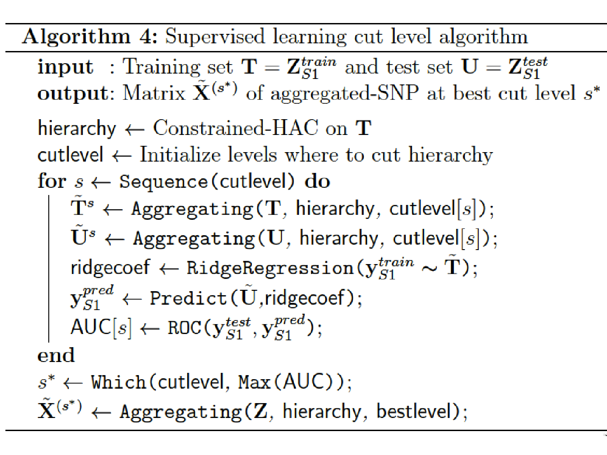

Chapter 4 Learning the Optimal in GWAS through hierarchical SNP aggregation
4.1 Related work
Although classical GWAS have limitations that prevent a full understanding of the heritability of genetic and/or multifactorial diseases, there are nevertheless ways of overcoming these limitations to some degree. For instance, it is possible to take into account the structure of the data in the hypothesis testing procedure. As an illustration, (Meinshausen 2008) proposed a hierarchical testing approach which considers the influence of clusters of highly correlated variables rather than individual variables. The statistical power of this method to detect relevant variables at single SNP level was comparable to that of the Bonferroni-Holm procedure (Holm 1979), but the detection rate was much higher for small clusters, and it increased further at coarser levels of resolution.
In the broad family of linear models, (Listgarten et al. 2013) introduced a likelihood ratio-based set test that accounts for confounding structure. The model is based on the linear mixed model and uses two random effects, one to capture the set association signal and one to capture confounders. They demonstrate a control of type I error as well as an improved power over more traditionally used score test.
Other methods focus on multiple linear regression either by taking into account the linkage disequilibrium within the genes to improve power (Yoo et al. 2016) or by clustering variants with weak association around known loci to increase the percentage of variance explained in complex traits (Paré, Asma, and Deng 2015).
Finally, other approaches will focus on the aggregation of summary statistics of single SNP within a same gene with for instance the data-driven aggregation of summary statistics described in (Kwak and Pan 2016) or the procedures of \(p\)-value combination in (Petersen et al. 2013). In the cited articles, the methods are used on SNP located in coding region (or extended intronic region in (Petersen et al. 2013)) but can be extended to any set of SNP as long as we pre-specified a set of variants within a region. However, the power for each test remains dependent of the true disease model. Furthermore, this kind of approaches may also lose statistical power in comparison to single-variant-based tests when only a very small number of the variants in a gene are associated with the trait, or when many variants have no effect or causal variants are low-frequency variants (Lee et al. 2014).
4.2 Method
In this section we describe a new method for performing GWAS using a four-step method that combines unsupervised and supervised learning techniques. This method improves the detection power of genomic regions implied in a disease while maintaining a good interpretability.
This method consists in:
Step 1: Performing a spatially constrained Hierarchical Agglomerative Clustering of the additively coded SNP matrix \(\mathbf{Z} \in \mathbb{R}^{n \times D}\) using the algorithm 3.7.3 developed by (A. Dehman, Ambroise, and Neuvial 2015).
Step 2: Applying a function to reduce the dimension of \(\mathbf{Z}\) using the group definition from the constrained-HAC. This step is described and illustrated in Figure 4.2.
Step 3: Estimating the optimal number of groups using a supervised learning approach to find the best cut into the hierarchical tree (cut level algorithm). This algorithm combines Steps 1 and 2 into an iterative process.
Step 4: Applying the function defined in Step 2 to each group identified in Step 3 to construct a new covariate matrix and perform multiple hypotheses testing on each new covariate to find significant associations with a disease phenotype \(\mathbf{y}\).
We entitled this method LEOS for LEarning the Optimale Scale in GWAS, implemented in a web server too available at http://stat.genopole.cnrs.fr/leos.
4.2.1 Step 1. Constrained-HAC
To take into account the structure of the genome in haplotype blocks, we
group the predictors (SNP) according to their LD in order to create a
new predictor matrix which reflects the structure of the genome. We use
the algorithm adjclust developed by (A. Dehman, Ambroise, and Neuvial 2015) which
consists in only allowing adjacent clusters to be merged, as described
in Section 3.7.3. This algorithm is available via the R
package at https://cran.r-project.org/web/packages/adjclust.
A similar adjacency-constrained hierarchical clustering using Ward’s linkage have already been proposed in (Grimm 1987), together with an algorithm called CONISS for Constrained Incremental Sums of Squares. However, the quadratic complexity of its implementation prevents it from being used on large genomic data sets.
In the context of GWAS, it is nevertheless possible to circumvent this problem by assuming that the similarity between physically distant SNP is small due to the particular LD structure of the genome, as seen in Section 1.7.
More specifically, we assume that the \(D\times D\) matrix of pairwise similarities defined as \(\mathbf{S} = dist(i,j)_{1 \leq i,j\leq D}\) is a band matrix of bandwidth \(h + 1\), where \(h \in [1,\dots,D]: dist(i,j) = 0\) for \(|i-j| \geq h\) and \(D\) the number of naturally ordered objects (SNP) to classify. This assumption is not restrictive, as taking \(h = D\) always works. However, considering the large dimension of genomic data, we are mostly interested in the case where \(h \ll D\).
Adjclust is an algorithm that uses this band similarity assumption to improve time and space complexity in the context of a genome-wide hierarchical clustering. The main features of this algorithm are the constant-time calculation of each of the Ward’s linkage involved in the spatially-constrained HAC and the storage of the candidate merges in a min-heap.
4.2.1.1 Ward’s linkage as a function of pre-calculated sums.
To decrease the complexity in the calculation of each of the Ward’s linkage, the trick is to note the sum of all similarities in any cluster \(K=\{u, \dots , v-1\}\) of size \(k = v-u\) as a sum of elements in the first \(\min(h,k)\) subdiagonals of \(\mathbf{S}\).
To see this, we define, for \(1 \leq r,l \leq D\), the sum of all elements of \(\mathbf{S}\) in the first \(l\) subdiagonals of the upper-right \(r \times r\) block of \(S\) as \[P(r,l) = \sum_{1 \leq i,j \leq r, |i-j| \ < l} dist(i,j) ,\] and symmetrically, \(\bar{P}(r, l) = P(p+1-r, l)\). Because \(P\) and \(\bar{P}\) are sums of elements in pencil-shaped areas, they are called forward pencil and backward pencil, as illustrated in Figure 4.1.

Figure 4.1: Example of forward pencils (in yellow and green) and backward pencils (in green and blue), and illustration of Equation (4.1) for cluster \(K=\{u, \dots , v-1\}\). Left: cluster smaller than bandwidth (\(k \leq h\)); right: cluster larger than bandwidth \(k \geq h\).
The advantage of computing the sums \(P\) and \(\bar{P}\) is that they can be used to calculate the sum \(S_{KK}\) of all similarities in cluster \(K\) following the identity: \[\begin{equation} P(v, h_k) + \bar{P}(u, h_k) = S_{KK} + P(p, h_k)\, \tag{4.1} \end{equation}\]
where \(h_k:=\min(h,k)\) and \(P(p, h_k)\) is the “full” pencil of bandwidth \(h_k\) (which also corresponds to \(\bar{P}(1, h_k)\)). By construction, all the bandwidths of the pencils involved are less than \(h\). Therefore, only pencils \(P(u,k)\) and \(\bar{P}(u,k)\) with \(1 \leq u \leq p\) and \(1 \leq k \leq h\) have to be pre-calculated, so that the total number of pencils to calculate and stored is less than \(2ph\). By calculating these pencils recursively using cumulative sums, the time complexity of the pre-calculation step is \(ph\) (see proof in (Alia Dehman 2015)).
4.2.1.2 Storing candidate fusions in a min-heap.
Each iteration \(i\) of the hierarchical agglomerative clustering (Algorithm 1, Section 2.5.1, consists in finding the minimum of \(D-i\) elements, corresponding to the candidate fusions between the \(D-i+1\) clusters, stored in a sorted list, and merging the corresponding clusters. However, as the cost of deleting and inserting an element in a sorted list is linear in \(D\), adjclust choose to reduce the complexity by storing the candidate fusions in a partially-ordered data structure called a min-heap (Williams 1964).
A min-heap is a binary tree structure constructed such that the value of each node is smaller than the value of its two children. The advantage of such structure is the cost trade-off they achieve between maintaining the structure and finding the minimum element at each iteration. More specifically, at the beginning of the clustering, the heap is initialized with \(D-1\) candidate fusions in \(\mathcal{O}(D \log(D))\). Then, each of the \(D\) iteration involves at most \(\mathcal{O}(\log(D))\) operations as:
finding the best candidate fusion (root of the min heap) in \(\mathcal{O}(1)\),
creating a new cluster corresponding to this fusion in \(\mathcal{O}(1)\),
deleting the root of the min heap in \(\mathcal{O}(\log(D))\),
inserting two possible fusions in the min heap in \(\mathcal{O}(\log(D))\).
Globally, with a space complexity of \(\mathcal{O}(Dh)\), corresponding to the \(2Dh\) pre-calculated pencils, and a time complexity of \(\mathcal{O}(D(h + log(D))\), where \(\mathcal{O}(Dh)\) comes from the pre-calculation of pencils and \(\mathcal{O}(D\log(D))\) from the \(D\) iterations of the algorithm, adjclust achieves a quasi-linear time complexity and linear space complexity when \(h \ll D\).
In a GWAS application, the choice of \(h\) will mainly depends on the genotyping density and on the strength of the LD structure in the studied population. In the evaluation of our method in both numerical simulations 4.3.2 and real data application (Section 4.4.3), we set the value at \(h = 100\), having observed that higher values had no impact on the performance of the method.
4.2.2 Step 2. Dimension reduction function
One way of addressing issues related to high-dimensional statistics (and in particular the multiple testing burden that we mentioned in Section 2.6.5) is to reduce the dimensionality of the predictor matrix $ ^{N D} $ by creating a reduced matrix $ $ with new covariates that nevertheless remain representative of the initial matrix. This means reducing the number of predictors \(D\) to \(G \ll D\), with row \(\tilde{\mathbf{S}x}_{i}\) the \(G\)-dimensional vector of new predictors for observation \(i\). In this study we use a blockwise approach to construct a matrix of new uncorrelated predictors $ ^{N G} $, with \(G\) the number of groups in linkage disequilibrium identified via the constrained agglomerative hierarchical clustering described in Step 1.
While classical methods use the initial set of covariates to predict a phenotype, we propose combining a clustering model with a dimension reduction approach in order to predict \(\mathbf{y}\). For each group identified with the constrained-HAC, we apply a function to obtain a single variable defined as the number of minor alleles present in the group. For each observation \(i\) and in each cluster $ g $, the variable is defined as: \[\label{eq:aggregfun} \tilde{x}_{ig}~=~\sum_{d \in g} z_{id}.\]
We note that this function is close to the function used in the burden tests (Section 3.7.2) where we attribute a weight \(\omega_d = 1\) to each SNP since we do not particularly focus on rare variants but rather on variants having a \(MAF \geq 5\%\). In order that the values for the different groups are comparable, we eliminate the effect of group size by centering and scaling the matrix \(\tilde{\mathbf{X}}\) to unit variance. In the remainder of the paper we will refer to the covariates in \(\tilde{\mathbf{X}}\) as aggregated-SNP variables.

Figure 4.2: Schematic view of Step 2 of the algorithm to calculate the matrix of predictors \(\tilde{\mathbf{X}}^s\) at a given level \(s\) of the hierarchy.
4.2.3 Step 3. Optimal number of groups estimation
Estimating the optimal number of groups to select, i.e. the level at which the hierarchical clustering tree should be cut, is a fundamental matter which impacts the relevance of the association analysis. As we have seen in Section 1.7, it is known that the human genome is structured into haplotype blocks with little or no within-block recombination, but it is not easy to determine how these blocks are allocated throughout the genome for a given set of SNP.
In the literature, in an unsupervised learning context, a number of models have been proposed for determining the optimal number of groups in a hierarchical clustering (see Section 2.5.1). However, since GWAS consist in evaluating the likelihood of the disease from genetic markers, we propose an algorithm that makes use of the phenotype \(\mathbf{y}\) to determine the optimal number of clusters.
We propose here a supervised validation set approach to find this optimum. Since this algorithm aims to identify phenotype-related SNP clusters, it is necessary to split the dataset into two subsets to avoid an inflation of type I errors in the testing procedure. One subset, \([\mathbf{y}_{S1}, \mathbf{Z}_{S1}]\) with sample size \(t_1 = n/2\) is used to choose the optimal cut and the second one, \([\mathbf{y}_{S2}, \mathbf{Z}_{S2}]\) of sample size \(t_2=n/2\), to perform the hypothesis testing in Step 4.
The algorithm we propose can be summarized as follows:
Apply the constrained-HAC described in Step 1 on a training set \(\mathbf{T} = \mathbf{X}^{train}_{S1} \subset \mathbf{X}_{S1}\), and for a given level \(s\) of the hierarchy we apply the dimension reduction function defined above (Step 2) to each of the \(G_s\) clusters to construct the matrix \(\tilde{\mathbf{T}}^s = \left\lbrace \tilde{\mathbf{T}}_g^s \right\rbrace_{g = \mathcal{G}^s_1}^{\mathcal{G}^s_{G_s}}\).
Fit a ridge regression model to estimate the coefficients of the predictors in \(\tilde{\mathbf{T}}^s\). We chose to resort on the ridge regression model because, as we explained in Section 2.3.2, it is known to have a better stability in comparison to other penalized-regression models such as lasso regression (Bousquet and Elisseeff 2002).
Once the ridge coefficients are estimated, we predict the phenotypic values on the test set using the matrix \(\mathbf{U} = \mathbf{X}^{test}_{S2}\) and calculate either the mean test set error when the phenotype is quantitative or the Area Under the ROC curve (AUC-ROC) when it is binary.
Repeat with procedure for different levels in the hierarchy and defined the optimal cut level \(s^*\) (or equivalently the optimal number of groups \(G^{s^*}\)) as the level which maximizes the prediction accuracy criterion.

At last, once the optimal number of groups \(G^*\) has been determined, we apply the function to each selected group and construct the matrix \(\tilde{\mathbf{X}}^{(s^*)}\).
4.2.4 Step 4. Multiple testing on aggregated-SNP variables
Here we use a standard Single Marker Analysis, has described in Section 3.4, to find associations with the phenotype, but instead of calculating \(p\)-value for each SNP in \(\mathbf{Z}\), we calculate \(p\)-value for each aggregated-SNP variable in \(\tilde{\mathbf{X}}^{(s^*)}_{S2} \subset \tilde{\mathbf{X}}^{(s^*)}\).
For each single-predictor model, we perform a Likelihood Ratio Test (Section 2.6.3) where we compare the intercept-only model against the single-predictor model and get for each predictor a \(p\)-value using the \(\tilde\chi^2\) distribution.
As seen in Section 2.6.5, we need to compute an appropriate significance threshold to control either the Family-Wise Error Rate or the False Discovery Rate. However, as the FWER control methods reduce the significance level according to the number of tests carried out in the study, it is preferable, in this context, to control for the FDR to be less stringent on the significance threshold. We therefore chose to use the Benjamini-Hochberg procedure described in Section ?? to adjust the significance threshold.
4.3 Numerical simulations
The performance evaluation described below was designed to assess the ability of our method to retrieve causal SNP or causal clusters of SNP under different simulation scenarios. For each scenario, we use a matrix \(\mathbf{Z}_{\text{HAPGEN}}\) of SNP generated by the software (Su, Marchini, and Donnelly 2011) with a sample size of 1000 individuals. This software allows to simulate an entire chromosome conditionally on a reference set of population haplotypes (from HapMap3) and an estimate of the fine-scale recombination rate across the region, so that the simulated data share similar patterns with the reference data. We generate the chromosome 1 (103 457 SNP) using the haplotype structure of CEU population (Utah residents with Northern and Western European ancestry from the CEPH collection) as reference set. The software allows to generate a controls-only matrix of SNP (no disease allele). We filtered this matrix according to the minor allele frequency to only keep SNP with a MAF greater than \(5\%\) thus reducing the size of \(\mathbf{Z}_{\text{HAPGEN}}\) to 60 179 SNP.
We generate a posteriori the phenotype using the logit model with a given set of causal SNP or cluster of SNP. The main difference between the different scenarios is to be found in the way that the case-control phenotype \(\mathbf{y}\) is simulated.
4.3.1 Simulation of the case-control phenotype
For each scenario, we simulated a case-control phenotype \(\mathbf{y}\) under a logistic regression model. The case-control phenotype is generated following a Bernoulli distribution function, following the conditional probability $(=1|) $ with \(\mathbf{H} \in \mathbb{R}^{n \times \ell}\) a matrix constructed by sampling \(\ell\) causal variables from \(\mathbf{Z}_{\text{HAPGEN}}\).
The conditional probability is calculated using the logit model: \[\mathbb{P}(\mathrm{Y}=1|\mathbf{H}) = \frac{\exp(\beta_0 + \boldsymbol{\beta}^T \mathbf{H})} {1 + \exp(\beta_0 + \boldsymbol{\beta}^T \mathbf{H})},\] where $ = [1, , ] $ is the vector of coefficients corresponding to the \(\ell\) predictors and \(\beta_0\) is the intercept defined as \({ \log \left(\frac{\pi}{(1-\pi)}\right)}\), with \(\pi\) the true prevalence of the disease in the population. The predictors are centered to have zero-mean before generating the vector of probability.
One way to have an association between the response and the predictors strong enough to be detected is to set large \(\boldsymbol{\beta}\) coefficients on the predictors. Indeed, there is a direct relationship between the odd ratio of a covariate and its corresponding coefficients in the logistic regression model given by \(OR_i = e^{(\boldsymbol\beta_i)}\) (Diaz-Quijano 2012). In our simulations, the difficulty of the problem, i.e. the power to detect an association, is linked to the number of causal predictors used to generate \(\mathbf{y}\) and the \(OR\) set to each predictor.
To simulate different scenarios, we considered the following parameters:
Nature of the causal predictors:
Clusters of SNP: For each replicate, \(\ell = \lbrace 1, 2, 3 \rbrace\) genomic regions have been identified to be causal. These regions have been chosen among the matrix \(\mathbf{Z}_{\text{HAPGEN}}\) to have different levels of LD among the SNP that compose them. The average correlation coefficient among the SNP in these regions varies from \(r^2=0.6\) to \(r^2=0.85\) and the size of the region varies from 20 SNP to 60 SNP. Once identified, the causal regions were aggregated using the function described in Step 4.2.2 to construct a matrix \(\tilde{\mathbf{H}}\) of aggregated-SNP predictors. This matrix was then used to generate the case-control phenotype following $(=1|) $. We will refer to this scenario as the SNPclus scenario.
Single SNP: In this scenario the phenotype was simulated by directly sampling SNP from the same causal regions identified in the SNPclus scenario. For each replicate, we chose 10 individuals SNP among each of these regions to construct a matrix \(\mathbf{H}\) with \(\ell = \lbrace 10 ,20 ,30 \rbrace\) single SNP predictors, depending on the number of causal regions . This matrix is then used to generate the case-control phenotype. The chosen SNP have a MAF varying from \(10 \%\) to \(30\%\). We will refer to this scenario as the singleSNP scenario.
Number of causal predictors \(\ell\) and number of replicates:
We performed \(5\) replicates for each combination \(\ell \times 2\) scenarios and we evaluate the average performance over these \(5\) replicates. For each scenario we considered from 1 to 3 causal genomic regions, thus, for SNPclus scenario, we used up to 3 causal aggregated-SNP predictors, and for the singleSNP scenario, up to \(10 \times 3 = 30\) causal single-SNP predictors to generate the phenotype.
Odds ratio (\(\beta\) coefficients) of the causal predictors:
For the SNPclus scenario we chose an equal OR of 2.7 for each causal aggregated predictor, corresponding to a \(\beta\) coefficient equal to 1. For the singleSNP scenario we chose an equal OR of 1.1 for each causal predictor, corresponding to a \(\beta\) coefficient equal to \(0.1\). The rationale behind these coefficients arises from the hypothesis that the combined effect of several low-effect SNP on the phenotype is stronger than the effects of each individual SNP.
As previously mentioned, we generated the phenotype using causal SNP simulated with the software. However, as commercial micro-arrays such as Affymetrix and Illumina arrays do not genotype the full sequence of the genome, some SNP are thereby unmapped and the marker density is in general lower than the HapMap marker density. That is why we chose, in our numerical simulation, to generate the phenotype with causal variables chosen from \(\mathbf{Z}_{\text{HAPGEN}}\) and to assess the performance of the methods using only those SNP which are mapped on a standard Affymetrix micro-array (about 23 823 mapped SNP in our case). By doing so, some causal SNP are not mapped on the commercial SNP set and thus simulations are more similar to real genome-wide analysis conditions.
4.3.2 Performance evaluation
4.3.2.1 Competitors
The objective of our method being to identify the optimal scale at which to perform association studies, we compared our proposal with several methods working at different genomic scales. The purpose is to assess the ability of each method to retrieve true causal genomic regions in the different simulation scenarios.
For each scenario, four approaches have been considered:
SKATtree, a SKAT model, as described in Section (rare-variant), which use our group definition,
SKATnotree, a SKAT model using an alternative group definition produced by successive chunks of 20 SNP,
SMA, the classical Single Marker Analysis described in Section 3.4,
SASA (Single Aggregated-SNP Analysis) a method close to SMA, where instead of testing the genotype-phenotype association using each single SNP, we are testing it using aggregated-SNP variables.
We chose to consider two different group definitions for SKAT in order to evaluate the impact of the group structure on the association findings. The comparison with SMA allows to highlight the advantage of working at a group scale. We hypothesize that grouping low-effect SNP should have a better statistical power than testing the main effects at single-SNP level.
For all methods, we compare the results using 2 types of multiple testing corrections: the methods of Holm-Bonferroni (Holm 1979) and (Benjamini and Hochberg 1995).
4.3.2.2 True and False Positive definitions
The problem of retrieving true causal associations can be represented as a binary decision problem where the compared methods are considered as classifiers. The decision made by a binary classifier can be summarized using four numbers: True Positives (\(TP\)), False Positive (\(FP\)), True Negatives (\(TN\)) and False Negatives (\(FN\)). We represent True Positive Rate (\(\text{Recall or Power} ={TP/(FN+TP)}\)) versus Precision (\(\text{Precision}={TP/(FP+TP)}\)). In this context, a true positive corresponds to a true causal genomic region associated to significant p-value. The definition of what can be considered as the true causal genomic region may nevertheless be subject to some ambiguity. In GWAS, the presence of LD between SNP often leads to consider the signal associated to multiple neighbouring SNP as indicating the existence of a single genomic locus with possible influence on the phenotype.
In our simulations, a causal genomic region is defined a priori as a causal predictor in the logit model. However, since the clusters of SNP identified by our algorithm are not totally independent, some residual correlation may remain between clusters. This leads to question the notion of relevant variable when the variables are structured into strongly correlated groups. Should all the variables of the block be considered as explanatory, or should we define as only true positives the causal variables used to generate the phenotype? In order to circumvent this issue, we chose to relax the definition of a false positive joining the work of (Brzyski et al. 2017) and (Yi et al. 2015) where they propose to control the FDR in GWAS by considering significant SNP correlated to the true causal variables as true positives. For the simulation of the phenotype, we hypothesize an underlying multivariate regression model, but test for univariate model as it is the usual practice, which leads to reconsider the definition of true positive. As in (Yi et al. 2015) we consider the set of true positive as the union of the causal true positive and the linked true positive, which are regions adjacent to the causal regions and correlated with them at a level of at least 0.5. Regarding the single-marker analysis approach, since it works at the single SNP level, we compare it with the others in the singleSNP scenario only.
4.4 Results
4.4.1 Results and discussions of the numerical simulations
4.4.1.1 Area Under the ROC Curve
For each simulation, the cut level algorithm was applied. We recall that this algorithm calculates a prediction error on a test set for several levels in a constrained-HAC tree with a ridge regression model and chooses the level for which this error is the smallest. The AUC-ROC is plotted for the different levels, and the best cut level corresponds to the level for which AUC-ROC is the greatest. The results from the simulation scenario clusSNP and singleSNP described in Section 4.3.1 are shown in Figure 4.3.

Figure 4.3: Area under ROC curves according to the number of clusters in the clusSNP and singleSNP scenarios: the vertical lines indicate the number of aggregated-SNP (clusters) obtained with Algorithm 4, i.e. the level where the prediction error is minimized (AUC-ROC at its maximum).
Our algorithm cuts the hierarchy either at a fairly high level (few large clusters) or at a low level (many small clusters), depending on the number of causal variables we used to generate the phenotype. The more the number of causal regions decreases, the higher the algorithm cuts in the hierarchical tree. In either case our algorithm is able to increase the predictive power by aggregating SNP with the function . We are thus able build a matrix of uncorrelated aggregated-SNP predictors that are representative of the initial SNP matrix and strongly linked to the phenotype.
4.4.2 Performance results for simulated data.
As previously described, we evaluate and compare the methods using two metrics, namely Recall and Precision.
Here the precision metric is somewhat relaxed compared to its true definition since we adapted the definition of a true positive and false positive to the GWAS context. It is important to note that for all the methods, we compare the Benjamini-Hochberg method to control FDR with the Bonferroni correction to control FWER at a threshold of \(5\%\). However, since there are residual correlations between SNP clusters and that the replication of numerous samples per combination of parameters is difficult in this realistic setting of simulations, the observed Type I error rate may be greater than \(5\%\). What we think is important to put forward to in these simulations is the ability of our algorithm to define groups of relevant clusters that will be detected on average with more precision and more power (SASA and SKATtree) than using an arbitrary group definition (SKATnotree) or no definition of groups at all (SMA).
![Recall vs Precision for each method (shape and colours in plot). In rows are the simulation scenarios. In columns, we evaluate performance using Benjamini-Hochberg threshold (left) and bonferroni correction threshold (right). The second row illustrates the performance to retrieve the true causal genomic region under the SNPclus scenario, thus only group-based approaches are considered (SASA, SKATtree and SKATnotree). The numbers inside the points correspond to the number of causal predictors and each point is the average value of 5 replicates.](/Users/fguinot/Documents/bioptilamme/Manuscript/figures/scatter_perf_simu.png)
Figure 4.4: Recall vs Precision for each method (shape and colours in plot). In rows are the simulation scenarios. In columns, we evaluate performance using Benjamini-Hochberg threshold (left) and bonferroni correction threshold (right). The second row illustrates the performance to retrieve the true causal genomic region under the SNPclus scenario, thus only group-based approaches are considered (SASA, SKATtree and SKATnotree). The numbers inside the points correspond to the number of causal predictors and each point is the average value of 5 replicates.
The results represented in Figure 4.4 show that the methods using our algorithm for the cluster definition (SASA and SKATtree) have in average a better precision than the two other methods. The approach SASA, which combine our clustering algorithm and the aggregating function to test the association of aggregated-SNP with the phenotype, perform poorly in term of Recall but is far better in term of Precision compared to SMA and SKATnotree. These results suggest that it is better to combine our algorithm with the SKAT method than with the SASA method. We also note that applying the SKAT approach on an arbitrary group definition (SKATnotree) lead to a good recall but a very poor precision, showing the benefit of using our custom group definition in this context. Regarding the SMA approach in the singleSNP scenario, we can observe a loss in term of Recall compare to the SKATtree and SKATnotree method suggesting that we can take benefit of grouping low effect SNP to improve the power to detect causal genomic regions.
In GWAS, having a method with a good precision is as important, or even more important, than having a good recall. It is better to spot a few significant associations with a high certainty than to spot numerous significant associations but with only a low level of certainty for most of them. For this reason, we believe that our method represents an improvement in terms of precision without loss of power insofar as SKATtree seems able to detect significant genomic regions associated with the phenotype with a higher degree of certainty than standard approaches.
4.4.3 Application in Wellcome Trust Case Control Consortium(WTCCC) and Ankylosing Spondylitis (AS) studies
To evaluate the performance of our method on real data, we performed GWAS analysis on datasets made available by (WTCCC 2007). The WTCCC data collection contains 17000 genotypes, composed of 3000 shared controls and 14000 cases representing 7 common diseases of major public health concern: inflammatory bowel disease (IBD), bipolar disorder (BD), coronary artery disease (CAD), hypertension (HT), rheumatoid arthritis (RA), and Type I (T1D) and Type II (T2D) diabetes. Individuals were genotyped with the Affymetrix 500K Mapping Array Set and are represented by about 500,000 SNP (before the application of quality control filters).
In parallel to the analysis of the WTTCC data, we decided to assess our method on another dataset from a different study. The ankylosing spondylitis (AS) dataset consists of the French subset of the large study of the International Genetics of Ankylosing Spondylitis (IGAS) study (International Genetics of Ankylosing Spondylitis Consortium (IGAS) et al. 2013). For this subset, unrelated cases were recruited through the Rheumatology clinic of Ambroise Paré Hospital (Boulogne-Billancourt, France) or through the national self-help patients’ association: “Association Française des Spondylarthritiques”. Population-matched unrelated controls were obtained from the “Centre d’Etude du Polymorphisme Humain”, or were recruited as healthy spouses of cases. The dataset contains 408 cases and 358 controls, and each individual was genotyped for 116,513 SNP with Immunochip technology.
To remove the bias induced by population stratification in Genome-Wide analysis, we added the first 5 genomic principal components into the regression model as described in Section 3.6.3. Since the methods evaluated here do not deal with missing values, we chose to impute the missing genotypes with the most frequent genotypic value observed for each SNP.
For each dataset, we filtered the values to keep only those SNP having a MAF greater than \(5\%\). The minor allele frequencies of each dataset are represented in Figure 4.5.

Figure 4.5: Histograms of Minor Allele Frequencies (MAF) distribution in each datasets. (BD) Bipolar disorders; (CAD) Coronary artery disease; (IBD) Inflammatory bowel disease; (HT) Hypertension; (RA) Rheumatoid arthritis; (T1D) Type I diabetes; (T2D) Type II diabetes.
We applied our cut level algorithm to find relevant clusters of SNP and we performed single marker analysis on single SNP (SMA) and on groups of SNP (SASA, SKATtree, SKATnotree).
4.4.4 Results in WTCCC and AS studies
4.4.4.1 AUC-ROC curves
In this section, we compare the AUC-ROC curves generated by our cut level algorithm for each disease (WTCCC and AS data).
Concerning the WTCCC diseases, given that patients were all genotyped using the same micro-array, their genotypes have the same LD structure, and therefore the shapes of the AUC-ROC curves should be very similar between the different diseases. As can be observed in Figure 4.6 (WTCCC diseases), the shapes of the AUC-ROC curves are closely similar, with a chosen cut level located around 100 000 clusters of SNP, suggesting a shared LD pattern among patients.

Figure 4.6: AUC-ROC for different cut levels in a HAC-tree of 7 WTCCC diseases after quality control filters. Each point corresponds to an AUC value computed on a test set from a logistic ridge regression model for a given level in the constrained-HAC tree.
In contrast, the AUC-ROC from the AS data (Figure 4.7) behaves differently from the WTCCC data. Predictive power is substantially improved if aggregated-SNP predictors are used at a fairly high level in the hierarchical tree (7478 optimal clusters identified by the cut level algorithm). It is relevant to note that the pattern we observe on this real dataset is similar to the pattern we observed in the numerical simulations, especially under the clusSNP scenario.

Figure 4.7: AUC-ROC for different cut levels in a HAC-tree of the spondylitis arthritis disease (Immunochip micro-array). Each point corresponds to an AUC value computed on a test set from a logistic ridge regression model for a given level in the constrained-HAC tree.
As we remarked concerning the WTCCC results, the algorithm identifies a relatively high number of clusters in relation to AS and simulated data. This difference is certainly due to the LD level among the genetic markers in the Affymetrix array. The correlation levels among SNP for a given bandwidth are similar between the simulated and the AS data, but greater than for the WTCCC data (Table 4.1 and Figure 4.8). This suggests that there is a stronger LD pattern between blocks of SNP in AS and simulated data, implying that the optimal number of clusters identified by the algorithm is dependent on the LD level among variables.


Figure 4.8: Comparison of linkage disequilibrium level among SNP for 3 different types of dataset: WTCCC, simulated and ankylosing spondylitis datasets. LD computation is based on \(R^2\) between SNP.
4.4.4.2 GWAS analysis on AS and WTCCC datasets
To evaluate the ability of our procedure to discover new associations between SNP and ankylosing spondylitis, we compare our procedure with the univariate approach (SMA) and SKAT model with our group definition and arbitrary group definition (20 SNP). For SASA, we perform multiple hypotheses testing on the aggregated-SNP predictors in order to unravel significant associations with the phenotype. Figure 4.9 presents the results of the association analysis. For each method the logarithm of the \(p\)-value of the different predictors is plotted along their position on the genome.

Figure 4.9: Manhattan plots showing results of GWAS analysis on ankylosing spondylitis data. For each Manhattan plot, the Benjamini-Hochberg (BH) threshold is represented by the blue line and the Bonferroni threshold by the red line. According to the BH threshold, there are: (A) 64 significantly associated aggregated-SNP; (B) 602 significantly associated single SNP; (C) 80 significantly associated groups of SNP and (D) 138 significantly associated groups of SNP.
Either method highlight a region on chromosome 6 strongly associated with the phenotype. This region corresponds to the Major Histocompatibility Complex (MHC), and Human Leukocyte Antigen (HLA) class I molecules HLA B27 belonging to this region have been identified as a genetic risk factor associated with ankylosing spondylitis (???). The approach SASA succeeds in detecting this risk locus with a good precision, 64 aggregated-SNP variables are significantly associated with the phenotype compared to 602 significantly associated SNP with the standard SMA.
For the analysis of the WTCCC datasets, we represent the results, in Figure 4.10, by plotting the expected \(p\)-value against the observed \(p\)-value. We perform the analysis using the approach SASA only.
![Q-Q plots of group-based genome-wide analysis on WTCCC data using the SASA approach. For each Manhattan plot, the Benjamini-Hochberg (BH) threshold is represented by the green dotted line and the Bonferroni threshold by the red dashed line. (A) Bipolar disorder - 13 significant clusters of SNP; (B) Coronary artery disease - 4 significant clusters of SNP; (C) Inflammatory bowel disease - 356 significant clusters of SNP ; (D) Hypertension - 47 significant clusters of SNP ; (E) Rheumatoid arthritis - 202 significant clusters of SNP ; (F) Type I diabetes - 358 significant clusters of SNP ; (G) Type II diabetes - 28 significant clusters of SNP.](/Users/fguinot/Documents/bioptilamme/Manuscript/figures/qqplot_WTCCC.png)
Figure 4.10: Q-Q plots of group-based genome-wide analysis on WTCCC data using the SASA approach. For each Manhattan plot, the Benjamini-Hochberg (BH) threshold is represented by the green dotted line and the Bonferroni threshold by the red dashed line. (A) Bipolar disorder - 13 significant clusters of SNP; (B) Coronary artery disease - 4 significant clusters of SNP; (C) Inflammatory bowel disease - 356 significant clusters of SNP ; (D) Hypertension - 47 significant clusters of SNP ; (E) Rheumatoid arthritis - 202 significant clusters of SNP ; (F) Type I diabetes - 358 significant clusters of SNP ; (G) Type II diabetes - 28 significant clusters of SNP.
4.5 Generalized additive models in GWAS
So far, we have modelled the phenotype as a linear function of the predictors using the logistic linear regression framework but we could also be interested to put forward non-linear relationships. One way to achieve this would be to use smoothing splines and generalized additive models (Section 2.4.4 and 2.4.5). Implementation of such methods in classical GWAS is not straightforward because the predictors are ordinal variables which take at most three different values ($ 0,1,2 $ with additive coding), making the use of smoothing splines irrelevant. However, in our context where we average the values of the SNP in each group, the use of smoothing splines becomes appropriate and may lead to the identification of non-linear otherwise undetectable with classical linear regression framework. We can nevertheless qualify this statement by mentioning that the SKAT model may also be able to identify non-linear relationships with an appropriate choice of kernel function, e.g. the weighted quadratic kernel.
We chose to focus on smoothing splines rather than other functions because they are, in our opinion, more easily interpretable. More specifically we seek at first to investigate what benefit we could take from replacing the ridge regression model in Algorithm 4 by the high-dimensional additive models (HGAM) described in Section 2.4.6 to estimate the optimal number of groups. Secondly, we would like to highlight non-linear behaviour between groups of SNP and the phenotype by fitting cubic smoothing splines on each of the aggregated-SNP predictors constructed at best level in the hierarchy.
4.5.1 Comparison of predictive power
To evaluate the contribution of generalized additive models in our methodology, we compare the results in term of predictive power of four different regression model used to estimate an optimal number of clusters for the ankylosing spondylitis dataset. Specifically, we compare the AUC-ROC curves obtained from Algorithm 4 when using respectively lasso, group-lasso, HGAM and ridge regression as the learning method. The results are presented in Figure 4.11. Note that for the group-lasso, the algorithm was applied at the single-SNP level rather than the aggregated-SNP.

Figure 4.11: AUC-ROC plot illustrating the predictive power of four statistical learning approaches for several levels of a hierarchical clustering applied on the ankylosing spondylitis dataset.
We observe a similar pattern between the ridge regression curve and the HGAM curve, with about the same optimal number of clusters identified. The use of cubic smoothing splines in the model greatly increase the predictive power compare to the others regression model. The group-lasso regression has a good predictive performance but is outperform by HGAM when we fit the model on the aggregated-SNP predictors at the best cut-level.
4.5.2 Results of univariate smoothing splines on aggregated-SNP
4.5.2.1 Manhattan plot
The best cut-level identified using high-dimensional additive model is set to 2750 aggregated-SNP. Firstly, to each of these variables, a univariate additive model using cubic smoothing splines with knots at each unique value is fitted. Secondly, we calculate p-value for each smooth as described in Section 2.6.4. The results are shown in Figure 4.12, where 23 significant aggregated-SNP have been identified.

Figure 4.12: Manhattan plot of p-value calculated for 2750 aggregated-SNP using cubic smoothing splines.
4.5.2.2 Fitted values of the most significant aggregated-SNP
In this section, the plots in Figure 4.13 represent the fitted value of the 23 most significant aggregated-SNP variables previously identified. These aggregated-SNP are almost all located on the same region, on chromosome 6, region having already been identified as genetic risk factor for the disease (see Section 4.4.4. We only observe a new signal on chromosome 18 which could be interesting to investigate.

Figure 4.13: Representation of the smooth fits for the 23 most significant aggregated-SNP using cubic smoothing splines.
We observe that the significant regions identified on chromosome 6 have a non-linear behaviour. However, since these regions have also been identified with a classical linear regression approach, we cannot conclude that we have detected these regions thanks to the smoothing splines. Whether or not there is a non-linear behaviour, this region on chromosome 6 is always identified as associated with the disease. However, we could have thought that the new signal on chromosome 18 could be due to the non-linear nature of the association with the phenotype, but it is not the case. Indeed, if we look at the plot of the fitted value for this cluster, we can see that it is a straight line, leading to the conclusion that this signal might be a false positive.
4.6 Discussion
Overall, accounting for the linkage disequilibrium structure of the genome and aggregating highly-correlated SNP is seen to be a powerful alternative to standard marker analysis in the context of GWAS. In terms of risk prediction, our algorithm proves to be very effective at classifying individuals given their genotype, while in terms of the identification of loci, it shows its ability to identify genomic regions associated with a disease with a higher precision than standard methods.
It is also worth mentioning that our algorithm can also accommodate imputed variables as imputation in GWAS uses the linkage disequilibrium between variables to improve the coverage of variants. Our method being based on LD to define groups of common variants, we expect the group structure not to be impacted by imputation.
In this work we propose a four-step method explicitly designed to utilize the linkage disequilibrium in GWAS data. Our method combines, on the one hand, unsupervised learning methods that cluster correlated-SNP, and on the other hand, supervised learning techniques that identify the optimal number of clusters and reduce the dimension of the predictor matrix. We evaluated the method on numerical simulations and real datasets and compared the results with standard single-marker analysis and group-based approaches (SKATtree and SKATnotree). We remarked that the combination of our aggregating function with a ridge regression model leads to a major improvement in terms of predictive power when the linkage disequilibrium structure is strong enough, hence suggesting the existence of multivariate effects due to the combination of several SNP. These results remained consistent across two applications involving several binary traits (WTCCC and ankylosing spondylitis datasets).
In terms of the identification of associated loci in different simulation scenarios, our method demonstrates its ability to retrieve true causal SNP and/or clusters of SNP with substantially higher precision coupled with a good power. On real GWAS data, our method has been able to recover a genomic region associated with ankylosing spondylitis (HLA region on chromosome 6) with a higher precision than standard single-marker analysis.
By making use of the continuous nature of aggregated-SNP variables (in contrast to the ordinal nature of single SNP variables), we were able to further improve our method using generalized additive models and natural cubic splines. In terms of predictive power, the implementation of such models to the analysis of the AS data proved to be more efficient compared to linear regression models such as group-lasso, lasso and ridge regression. As for the detection of non-linear behaviour, the results obtained on the AS dataset show interesting non-linear patterns between some aggregated-SNP in the specific HLA region of chromosome 6 and the phenotype. However, the use of cubic splines has not been able to identify chromosome regions different from those previously identified with a classical linear regression model. It could thus be interesting to analyse other datasets with this methodology to see if we are able to detect any relevant associations ever identified before.
References
Meinshausen, N. 2008. “Hierarchical Testing of Variable Importance.” Biometrika 95 (2): 265–78.
Holm, Sture. 1979. “A Simple Sequentially Rejective Multiple Test Procedure.” Scandinavian Journal of Statistics 6 (2): 65–70.
Listgarten, J., C. Lippert, E. Y. Kang, J. Xiang, C. M. Kadie, and D. Heckerman. 2013. “A Powerful and Efficient Set Test for Genetic Markers That Handles Confounders.” Bioinformatics 29 (12): 1526–33.
Yoo, Yun Joo, Lei Sun, Julia G. Poirier, Andrew D. Paterson, and Shelley B. Bull. 2016. “Multiple Linear Combination (MLC) Regression Tests for Common Variants Adapted to Linkage Disequilibrium Structure: Yoo et Al.” Genetic Epidemiology 41. https://doi.org/10.1002/gepi.22024.
Paré, Guillaume, Senay Asma, and Wei Q. Deng. 2015. “Contribution of Large Region Joint Associations to Complex Traits Genetics.” PLOS Genetics 11. https://doi.org/10.1371/journal.pgen.1005103.
Kwak, Il-Youp, and Wei Pan. 2016. “Adaptive Gene- and Pathway-Trait Association Testing with GWAS Summary Statistics.” Bioinformatics 32: 1178–84. https://doi.org/10.1093/bioinformatics/btv719.
Petersen, Ashley, Carolina Alvarez, Scott DeClaire, and Nathan L. Tintle. 2013. “Assessing Methods for Assigning SNPs to Genes in Gene-Based Tests of Association Using Common Variants.” PLOS ONE 8. https://doi.org/10.1371/journal.pone.0062161.
Lee, S., G. R. Abecasis, M. Boehnke, and X. Lin. 2014. “Rare-Variant Association Analysis: Study Designs and Statistical Tests.” American Journal of Human Genetics 95 (1): 5–23.
Dehman, A., C. Ambroise, and P. Neuvial. 2015. “Performance of a Blockwise Approach in Variable Selection Using Linkage Disequilibrium Information.” BMC Bioinformatics 16: 148.
Grimm, Eric C. 1987. “CONISS: A Fortran 77 Program for Stratigraphically Constrained Cluster Analysis by the Method of Incremental Sum of Squares.” Computers & Geosciences 13 (1): 13–35.
Dehman, Alia. 2015. “Spatial Clustering of Linkage Disequilibrium Blocks for Genome-Wide Association Studies.” PhD thesis, Université d’Evry Val d’Essonne; Université Paris-Saclay; Laboratoire de Mathématiques et Modélisation d’Evry.
Williams, J. W. J. 1964. “Algorithm 232: Heapsort.” Communications of the ACM 7 (6): 347â348.
Bousquet, O., and A. Elisseeff. 2002. “Stability and Generalization.” Journal of Machine Learning Research 2: 499–526.
Su, Z., J. Marchini, and P. Donnelly. 2011. “HAPGEN2: Simulation of Multiple Disease Snps.” Bioinformatics 27 (16): 2304.
Diaz-Quijano, Fredi A. 2012. “A Simple Method for Estimating Relative Risk Using Logistic Regression".” BMC Medical Research Methodology 1 (1): 14.
Benjamini, Yoav, and Yosef Hochberg. 1995. “Controlling the False Discovery Rate: A Practical and Powerful Approach to Multiple Testing.” Journal of the Royal Statistical Society: Series B 57 (1): 289–300.
Brzyski, Damian, Christine B. Peterson, Piotr Sobczyk, Emmanuel J. CandÚs, Malgorzata Bogdan, and Chiara Sabatti. 2017. “Controlling the Rate of GWAS False Discoveries.” Genetics 205 (January). https://doi.org/10.1534/genetics.116.193987.
Yi, Hui, Patrick Breheny, Netsanet Imam, Yongmei Liu, and Ina Hoeschele. 2015. “Penalized Multimarker Vs. Single-Marker Regression Methods for Genome-Wide Association Studies of Quantitative Traits.” Genetics 199 (1): 205–22.
WTCCC. 2007. “Genome-Wide Association Study of 14,000 Cases of Seven Common Diseases and 3,000 Shared Controls.” Nature 447 (7145): 661–78.
International Genetics of Ankylosing Spondylitis Consortium (IGAS), Adrian Cortes, Johanna Hadler, Jenny P. Pointon, Philip C. Robinson, and others. 2013. “Identification of Multiple Risk Variants for Ankylosing Spondylitis Through High-Density Genotyping of Immune-Related Loci.” Nature Genetics 45 (7): 730–38.